Дроби это тема, об которую спотыкается половина жителей нашей планеты. Если спросить у людей, с какой темы у них начались проблемы с математикой, то большинство из них ответят: «С дробей».
Этих людей нельзя упрекнуть. Дроби действительно тема не из простых. Тема дробей требует терпения и внимания, особенно если человек изучает её впервые.
Но есть и хорошие новости. Если вы наберётесь терпения и освоите дроби, то уверяем, что дальнейшее изучение математики станет для вас простым и интересным
А если вы уже хорошо изучили предыдущий урок, посвящённый делению, то можете быть уверены, что дроби вы освоили уже наполовину.
Содержание урока- Что такое дробь?
- Дробь означает деление
- Выделение целой части дроби
- Перевод смешанного числа в неправильную дробь
- Основное свойство дроби
- Сокращение дробей
- Второй способ сокращения дроби
- Задания для самостоятельного решения
Что такое дробь?
Если говорить простым языком, то дробь это часть чего-либо. Это «чего-либо» может быть чем угодно — едой, деньгами, числом. В народе дробь называют долей. Само слово «дробь» тоже говорит за себя — дробь означает дробление, деление, разделение.
Рассмотрим пример из жизни. Мы купили пиццу и решили съесть её в течении дня. Для этого разделим пиццу на четыре равные части, чтобы постепенно съедать по одному кусочку:
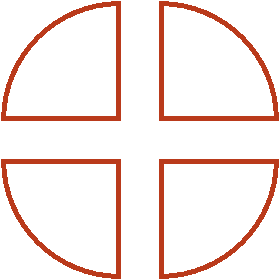
Посмотрите на этот рисунок. Представьте, что это наша пицца, разделённая на четыре куска. Каждый кусок пиццы это и есть дробь, потому что каждый кусок по-отдельности это часть пиццы.
Допустим, мы съели один кусок. Как записать это с помощью дроби? Очень просто. Сначала рисуют небольшую горизонтальную линию:
Внизу этой линии записывается на сколько кусков пицца была разделена. Пицца была разделена на четыре куска. Значит внизу линии записывается четвёрка:
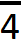
А сверху этой линии записывается сколько кусков пиццы было съедено. Съеден был один кусок, значит сверху записываем единицу:
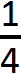
Такие записи называют дробями. Дробь состоит из числителя и знаменателя.
Число, которое записывается сверху, называется числителем дроби.
Число, которое записывается снизу, называется знаменателем дроби.
В нашем примере числитель дроби это единица, а знаменатель дроби — четвёрка. Эту дробь можно прочитать так: «одна четвёртая» либо «один кусок из четырёх» либо «одна четвёртая доля» либо «четверть» — всё это синонимы.
Теперь представьте, что мы съели ещё один кусок той же пиццы, которая была разделена на четыре равные части. Как записать это с помощью дроби?
Очень просто. В числителе записываем число 2, поскольку съедены уже два куска, а в знаменателе записываем число 4, поскольку всего пицца была разделена на четыре части:
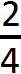
Эта дробь читается так: «две четвёртых». Также её можно описать словами: «два куска из четырёх» или «две четвёртые доли».
Теперь представьте, что мы разделили пиццу не на четыре части, а на три.

Допустим, мы съели один кусок этой пиццы. Как записать такую дробь?
Очень просто. Снова рисуем небольшую линию. Под ней записываем число 3, поскольку пицца разделена на три части, а над ней записываем число 1, поскольку съеден один кусок:
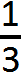
Эта дробь читается так: «одна третья». Также её можно описать словами: «один кусок из трёх», «одна третья доля» или просто «треть».
Если мы съедим два куска пиццы, то получим дробь, которая читается «две третьих» и записывается следующим образом:
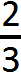
Теперь представьте, что мы разделили пиццу на две равные части, или, как говорят в народе, пополам:
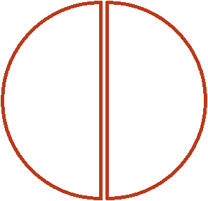
Допустим, из этих двух кусков мы съели один кусок. Как записать такую дробь?
Очень просто. Рисуем дробную черту. В знаменателе записываем число 2, поскольку пицца разделена на две равные части, а в числителе записываем число 1, поскольку съедена одна из этих частей:
Эта дробь читается так: «одна вторая». Её также можно описать словами: «один кусок из двух», «одна вторая доля» или просто «половина».
Дроби, которые мы сейчас рассмотрели, называют обыкновенными.
Вообще, дроби бывают двух видов: обыкновенные и десятичные. Сейчас мы изучаем обыкновенные дроби. Обыкновенная дробь состоит из двух частей: числителя и знаменателя. С десятичными дробями мы познакомимся немного позже.
Знаменатель дроби — это число, которое показывает на сколько равных частей можно что-либо разделить. Вернёмся к нашей пицце. Её можно разделить на 2, 3, 4, 5 и более равных частей. В зависимости от того, на сколько частей мы разделим пиццу, будет меняться и знаменатель дроби.
На следующем рисунке представлены три пиццы, разделённые по-разному. У первой пиццы знаменатель равен 2, у второй — 3, а у третьей — 4
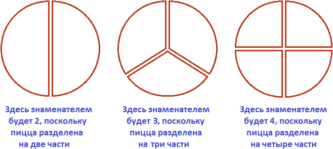
Числитель же показывает сколько частей взято от чего-либо. К примеру, если разделить пиццу на две части, как на первом рисунке, и взять одну часть для трапезы, то получится что мы взяли \(\frac{1}{2}\) (одну часть из двух), или как говорят в народе «половину» пиццы.
С помощью переменных дробь можно записать так:
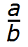
где a — это числитель, b — знаменатель.Следующий момент, который важно знать — это то, что обыкновенные дроби бывают правильными и неправильными.
Правильная дробь — это дробь, у которой числитель меньше знаменателя. Например, следующие дроби являются правильными:
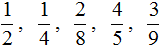
Почему такие дроби называют правильными? Вспомним, что дробь это часть чего-либо. Ведь будет логичнее, если эта часть будет меньше того, откуда эта часть была взята.
Например, если пицца разделена на четыре части, и мы возьмём \(\frac{1}{4}\) (одну четвёртую), то наш кусок будет меньше, чем все четыре куска вместе взятые (чем одна целая пицца). Поэтому такие дроби называют правильными.
С неправильной дробью всё наоборот. Неправильная дробь — это дробь, у которой числитель больше знаменателя. Например, следующие дроби являются неправильными:
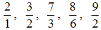

Теперь возьмём к примеру неправильную дробь
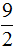
и применим её к нашей пицце. В знаменателе стоит 2, значит пицца разделена на две части, а в числителе стоит 9. Получается, что взято девять кусков из двух. Но как можно взять девять кусков, если их всего два? Ответ — никак. Поэтому такие дроби называют неправильными.Дробь, у которой числитель и знаменатель одинаковые, тоже называют неправильной. Например:
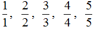
Вообще, такие дроби даже не должны называться дробями. И вот почему. Рассмотрим к примеру дробь
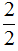
. Применим её к нашей пицце.Допустим, мы хотим съесть пиццы. В знаменателе стоит число 2, значит пицца разделена на две части. И в числителе стоит 2, значит взято две части. По сути, взята вся целая пицца, и если мы съедим эту пиццы, то съедим не часть пиццы, а всю пиццу целиком. Иными словами, съедим не дробь, а целую часть пиццы.
Дробь означает деление
Черта в дроби, которая отделяет числитель от знаменателя, означает деление. Она говорит, что числитель можно разделить на знаменатель.
Например, рассмотрим дробь
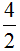
. Дробная черта говорит, что четвёрку можно разделить на двойку. Мы знаем, что четыре разделить на два будет два. Ставим знак равенства = и записываем ответ: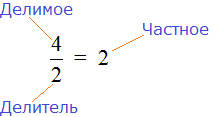
Можно сделать вывод, что любое деление чисел можно записать с помощью дробей. Например:
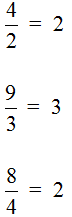
Это простейшие примеры. Видно, что у них отсутствует остаток. С остатком немного сложнее, зато интереснее. Поговорим об этом в следующей теме, которая называется «выделение целой части дроби».
Выделение целой части дроби
Вычислим дробь
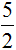
. Пять разделить на два будет два и один в остатке:5 : 2 = 2 (1 в остатке)
Проверка: (2 × 2) + 1 = 4 + 1 = 5
Но сейчас мы имеем дело с дробями, значит и отвечать надо в дробном виде. Чтобы хорошо понять как это делается, рассмотрим пример из жизни.
Представьте, что у вас есть 5 яблок и вы решили поделиться ими со своим другом. Причём поделиться по-честному, чтобы каждому досталось поровну. Как разделить эти 5 яблок?
Очевидно, что каждому из вас достанется по два яблока, а оставшееся одно яблоко вы разрежете ножом пополам и тоже разделите между собой:
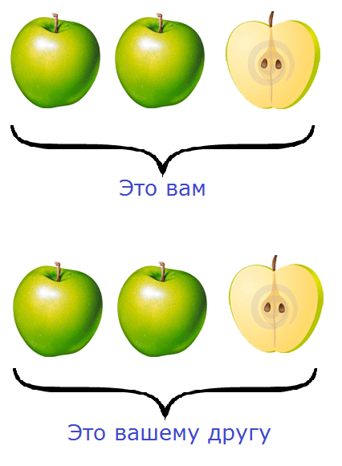
Посмотрите внимательно на этот рисунок. На нём показано, как пять яблок разделены между вами и вашим другом. Очевидно, что каждому досталось по два целых яблока и по половинке яблока.
Теперь возвращаемся к дроби и отвечаем на её вопрос. Сколько будет пять разделить на два? Смотрим на наш рисунок и отвечаем: если пять яблок разделить на двоих, то каждому достанется два целых яблока и половинка яблока. Так и записываем:
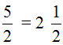
Схематически это выглядит так:
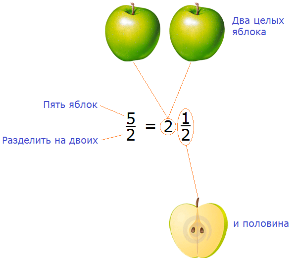
Процедуру, которую мы сейчас провели, называют выделением целой части дроби.
В нашем примере мы выделили целую часть дроби \(\frac{5}{2}\) и получили новую дробь  . Такую дробь называют смешанной. Смешанная дробь — это дробь, у которой есть целая часть и дробная.
. Такую дробь называют смешанной. Смешанная дробь — это дробь, у которой есть целая часть и дробная.
В нашем примере целая часть это 2, а дробная часть это \(\frac{1}{2}\)
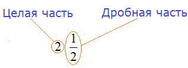
Обязательно запомните эти понятия! А лучше запишите в свою рабочую тетрадь.
Выделить целую часть можно только у неправильных дробей. Напомним, что неправильная дробь это дробь, у которой числитель больше знаменателя. Например, следующие дроби являются неправильными, и у них выделена целая часть:
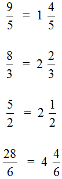
Чтобы выделить целую часть, достаточно знать как делить числа уголком. Например, выделим целую часть у дроби . Записываем уголком данное выражение и решаем:
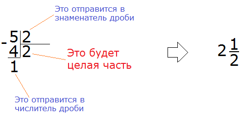
После того как решение примера завершается, новую дробь собирают подобно детскому конструктору. Важно понимать, что куда относить. Частное относят к целой части, остаток — в числитель дробной части, делитель — в знаменатель дробной части.
В принципе, если вы хорошо знаете таблицу умножения, и можете быстро в уме выполнять элементарные вычисления, то можно обойтись без записей уголком. В школах кстати, именно этого и требуют — чтобы учащиеся не тратили время на простые операции, а сразу записывали ответы.
Но если вы только начинаете изучать математику, советуем записывать каждую мелочь.
Рассмотрим ещё один пример на выделение целой части. Пусть требуется выделить целую часть дроби
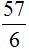
Записываем уголком данное выражение и решаем. Потом собираем смешанную дробь:
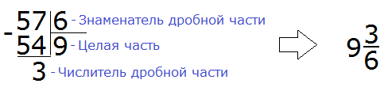
Получили:
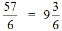
Перевод смешанного числа в неправильную дробь
Любое смешанное число получается в результате выделения целой части в неправильной дроби.
Например, рассмотрим неправильную дробь
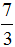
. Если выделить в ней целую часть, то получается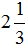
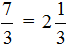
Но возможен и обратный процесс — любое смешанное число можно перевести в неправильную дробь. Для этого целую часть надо умножить на знаменатель дробной части и полученный результат прибавить к числителю дробной части. Полученный результат будет числителем новой дроби, а знаменатель останется без изменений.
Например, переведём смешанное число в неправильную дробь. Умножаем целую часть 2 на знаменатель дробной части:
\[2 \times 3 = 6\]
Затем к 6 прибавляем числитель дробной части:
\[6 + 1 = 7\]
Полученная семёрка будет числителем новой дроби, а знаменатель 3 останется без изменений:
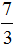
Подробное решение выглядит так:
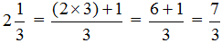
А с помощью переменных перевод смешанного числа в неправильную дробь можно записать так:
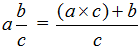
Пример 2. Перевести смешанное число
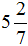
в неправильную дробь.Умножаем целую часть смешанного числа на знаменатель дробной части и прибавляем к числителю дробной части, а знаменатель оставляем без изменений:
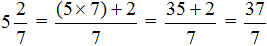
Основное свойство дроби
Основное свойство дроби говорит о том, что если числитель и знаменатель дроби умножить или разделить на одно и то же число, то получится равная ей дробь. Это означает, что значение дроби не изменится.
Например, рассмотрим дробь \(\frac{1}{2}\). Умножим её числитель и знаменатель на одно и то же число, например на число 2
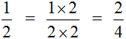
Получили новую дробь \(\frac{2}{4}\). Если верить основному свойству дроби, то дроби \(\frac{1}{2}\) и \(\frac{2}{4}\) равны между собой. Так ли это? Давайте проверим, нарисовав эти дроби в виде кусочков пиццы:
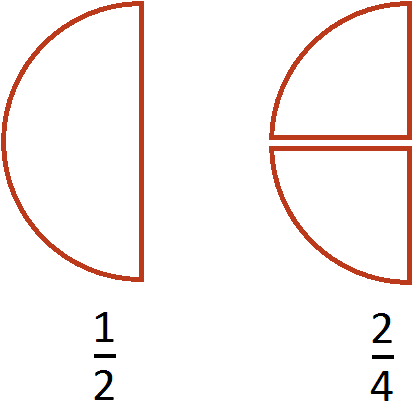
Посмотрите внимательно на эти два рисунка. Первый рисунок иллюстрирует дробь \(\frac{1}{2}\) (один кусок из двух), а второй иллюстрирует дробь \(\frac{2}{4}\) (два куска из четырёх). Если хорошо присмотреться на эти куски, то можно убедиться, что у них одинаковые размеры. Различие лишь в том, что разделаны они по-разному. Первая пицца была разделана на два куска, и с неё взяли один кусок. А вторая пицца была разделана на четыре куска, и с неё взяли два куска.
Поэтому между дробями \(\frac{1}{2}\) и \(\frac{2}{4}\) можно поставить знак равенства (=), поскольку они равны одному и тому же значению:
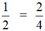
Теперь испытаем основное свойство дроби, разделив числитель и знаменатель на одно и то же число.
Рассмотрим дробь
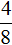
. Давайте разделим её числитель и знаменатель на одно и то же число, например на число 2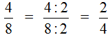
Получили новую дробь \(\frac{2}{4}\). Если верить основному свойству дроби, то дроби и \(\frac{2}{4}\) равны между собой. Так ли это? Давайте проверим, нарисовав эти дроби в виде кусочков пиццы:
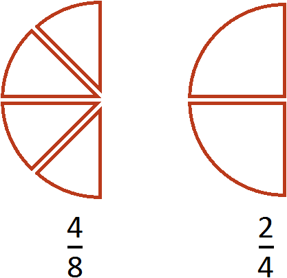
Посмотрите внимательно на эти два рисунка. Первый рисунок иллюстрирует дробь
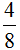
(четыре куска из восьми), а второй иллюстрирует дробь \(\frac{2}{4}\) (два куска из четырёх). Если хорошо присмотреться на эти куски, то можно убедиться, что у них одинаковые размеры. Различие лишь в том, что разделаны они по-разному. Первая пицца была разделана на восемь кусков, и с неё взяли четыре куска. А вторая пицца была разделана на четыре куска, и с неё взяли два куска.Поэтому между дробями и \(\frac{2}{4}\) можно поставить знак равенства (=), поскольку они равны одному и тому же значению:
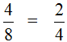
Теперь мы полностью проверили, как работает основное свойство дроби, и убедились, что работает оно замечательно.
Число, на которое умножается числитель и знаменатель, называется дополнительным множителем. Запомните это обязательно!
Сокращение дробей
Дроби можно сокращать. Сократить — значит сделать дробь короче и проще для восприятия. Например, дробь \(\frac{1}{2}\) выглядит намного проще и красивее, чем дробь
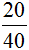
.Если при решении примеров получается большая и некрасивая дробь, то нужно попытаться её сократить.
Сокращение дроби опирается на основное свойство дроби. Поэтому, прежде чем изучать сокращение дробей, обязательно изучите основное свойство дроби.
Деление числителя и знаменателя на их наибольший общий делитель называется сокращением дроби.
Пример 1. Сократить дробь \(\frac{2}{4}\)
Итак, нужно разделить числитель и знаменатель дроби \(\frac{2}{4}\) на наибольший общий делитель чисел 2 и 4.
В данном случае дробь простая и для неё НОД ищется легко. НОД чисел 2 и 4 это число 2. Значит, числитель и знаменатель дроби \(\frac{2}{4}\) надо разделить на 2
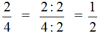
В результате дробь \(\frac{2}{4}\) обратилась в более простую дробь \(\frac{1}{2}\). Значение исходной дроби при этом не изменилось, поскольку сокращение подразумевает деление числителя и знаменателя на одно и то же число. А это действие, как было указано ранее, не меняет значение дроби.
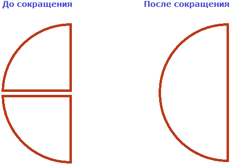
На рисунке представлены дроби \(\frac{2}{4}\) и \(\frac{1}{2}\) в виде кусочков пиццы. До сокращения и после сокращения они имеют одинаковые размеры. Разница лишь в том, что раздéланы они по-разному.
Пример 2. Сократим дробь
Чтобы сократить дробь , нужно числитель и знаменатель этой дроби разделить на наибольший общий делитель чисел 20 и 40.
НОД чисел 20 и 40 это число 20. Поэтому делим числитель и знаменатель дроби на 20
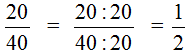
Пример 3. Сократим дробь
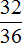
Чтобы сократить дробь , нужно числитель и знаменатель этой дроби разделить на наибольший общий делитель чисел 32 и 36.
НОД чисел 32 и 36 это число 4. Поэтому делим числитель и знаменатель дроби на 4
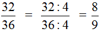
Если в числителе и знаменателе располагаются простые числа, то такую дробь сократить нельзя — она не сокращается. Такие дроби называют несократимыми. Например, следующие дроби являются несократимыми:
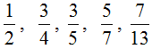
Напомним, что простыми называются числа, которые делятся только на единицу и самих себя.
Второй способ сокращения дроби
Второй способ является короткой версией первого способа. Суть его заключается в том, что пропускается подробное разъяснение того, на что был разделён числитель и знаменатель.
К примеру, вернёмся к дроби . Эту дробь мы сократили на 4, то есть разделили числитель и знаменатель этой дроби на число 4
Теперь представьте, что в данном выражении отсутствует конструкция , и сразу записан ответ \(\frac{8}{9}\) . Получится следующее выражение:
Суть в том что число, на которое разделили числитель и знаменатель, хранят в уме. В нашем случае числитель и знаменатель делят на 4 — это число и будем хранить в уме.
Сначала делим числитель на число 4. Полученный ответ записываем рядом с числителем, предварительно зачеркнув его:
Затем таким же образом делим знаменатель на число 4. Полученный ответ записываем рядом со знаменателем, предварительно зачеркнув его:
Затем собираем новую дробь. В числитель отправляем новое число 8 вместо 32, а в знаменатель отправляем новое число 9 вместо 36
Происходит своего рода замена одной дроби на другую. Значение новой дроби равно значению предыдущей дроби, поскольку срабатывает основное свойство дроби, которое говорит о том что если числитель и знаменатель дроби умножить или разделить на одно и то же число, то получится равная ей дробь.
Также, дроби можно сокращать, предварительно разложив на простые множители числитель и знаменатель.
Например, сократим дробь , предварительно разложив на простые множители числитель и знаменатель:
Итак, мы разложили числитель и знаменатель дроби на множители. Теперь применяем второй способ сокращения. В числителе и в знаменателе выбираем по множителю и делим выбранные множители на НОД этих множителей.
Давайте сократим по тройке в числителе и в знаменателе. Для этого разделим эти тройки на 3 (на их наибольший общий делитель). Получим следующее выражение:
Сократить можно ещё по тройке в числителе и в знаменателе:
Дальше сокращать больше нéчего. Последнюю тройку в знаменателе просто так сократить нельзя, поскольку в числителе нет множителя, который можно было бы сократить вместе с этой тройкой.
Записываем новую дробь, в числителе и в знаменателе которой будут новые множители.
Получили ответ \(\frac{1}{3}\). Значит, при сокращении дроби получается новая дробь \(\frac{1}{3}\).
Не рекомендуется пользоваться вторым способом сокращения дроби и способом разложения на простые множители числителя и знаменателя, если человек только нáчал изучать математику. Практика показывает, что это оказывается сложным на первых этапах.
Поэтому, если испытываете затруднения при использовании второго способа, то пользуйтесь старым добрым способом сокращения: делите числитель и знаменатель дроби на их наибольший общий делитель. Выражение в таком случае получается простым, понятным и красивым. Так, предыдущий пример может быть решён старым способом и будет выглядеть так:
Сравните это выражение с выражением, которое мы получили, когда пользовались вторым способом:
Первое выражение намного понятнее, аккуратнее и короче. Не правда ли?
Задания для самостоятельного решения
Показать решение
Показать решение
Показать решение

Показать решение

Показать решение
Показать решение
Показать решение
Показать решение
Показать решение

Показать решение
Показать решение
Показать решение
Показать решение
Показать решение
Показать решение
Показать решение

Показать решение

Показать решение

Показать решение

Показать решение


Показать решение
Показать решение

Показать решение
Показать решение
Показать решение
Показать решение
Показать решение
Показать решение
Показать решение